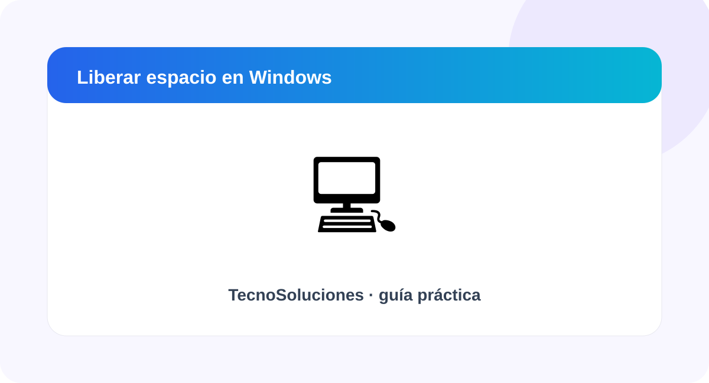

Cómo liberar espacio en Windows de forma segura

Una guía para localizar archivos innecesarios y utilizar las herramientas de almacenamiento integradas.
Comprueba qué ocupa el disco
Abre Configuración y entra en Sistema > Almacenamiento para consultar el uso por categorías.
Revisa archivos temporales
Windows ofrece herramientas para administrar archivos temporales y liberar espacio.
Vacía la papelera si estás seguro
Los archivos de la Papelera siguen ocupando espacio hasta que se elimina su contenido.
Considera Sensor de almacenamiento
La función de almacenamiento de Windows puede automatizar parte de la limpieza según la configuración elegida.
Resumen
Empieza identificando qué está causando el problema y realiza cambios de uno en uno. Así podrás comprobar qué solución funcionó y reducir el riesgo de eliminar información importante.
Fuentes recomendadas: documentación oficial de Google, Microsoft o WhatsApp según el tema. Consulta también Fuentes y referencias.